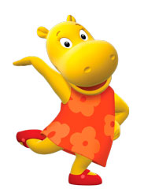

Soy fanática de la moda. Me gusta salir de compras, divertirme con amigos, salir con mi mejor amiga Uniqua.
Mis pasatiempos favoritos son:
jugar con mis amigos
comprar ropa
cantar y diseñar
actuar
Mi estilo de moda
Mi ropa favorita es mi vestido naranja con flores en diferentes posiciones, de un color naranja más clarito. Tengo unos zapatos naranjas oscuros que tienen una hebilla. En otros episodios van a poder ver más sobre mi estilo de ropa. Me gusta disfrazarme de muchas cosas! Mi disfraz favorito es el de sirena.
¿Cual es tu disfraz favorito?

¿Cómo soy?
Soy divertida y graciosa. Mi color favorito es el amarillo y adoro todo lo que tenga flores y brillos. Podemos ser grandes amigos! Te invito a ver todas mis aventuras. Mi serie se llama Backyardigans. Si te gustó mi página podes ver en Discovery Kids todos los capítulos
Aquí abajo podes ver un vídeo haciendo lo que más me gusta hacer. Actuar, bailar y disfrazarme!
Puedes visitar mi página de juegos. Vas a poder pintar, hacer un rompecabezas y también buscar diferencias. ¿Qué estás esperando? Nos vamos a divertir! Clikea aquí
Fotos
Esta soy yo con mis amigos y también disfrutando actuar. Me divierten las aventuras.